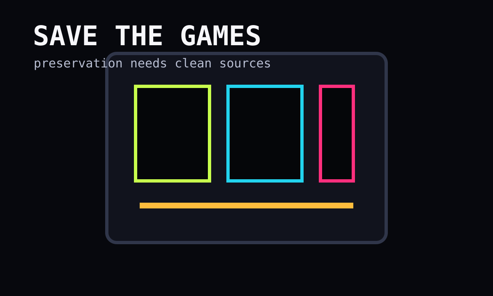

Digital-Only Gaming Makes Preservation Messy
As physical media becomes less central, players are paying more attention to preservation, ownership and playable archives.

TL;DR
When games stop being physical, players worry about losing access.
Why gamers care
Retro gaming is not just nostalgia. It is also about keeping games playable.
Move
Support preservation, creator-approved releases and local backups you are allowed to use.
The short version
Digital-only is convenient until a store closes, a license disappears or a game stops being easy to access.
Why retro players care
A lot of retro culture exists because fans kept hardware, docs, saves and knowledge alive. That matters, but public sites still need clean sourcing.
Safe path
Talk about preservation, link official/homebrew sources and keep local files local.
Sources and further reading
Keep exploring
Open the Game Room or visit the latest stories.